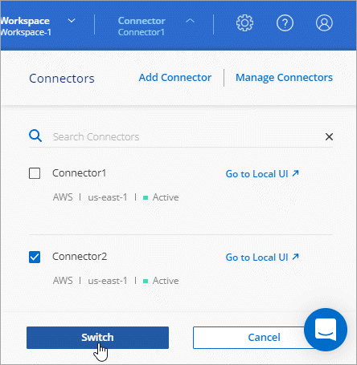
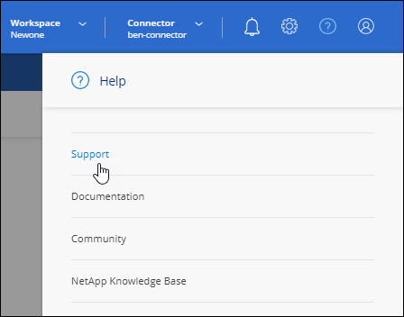

릴리스 정보
릴리스 정보
기존 커넥터 관리
 변경 제안
변경 제안
Connector를 만든 후에는 항상 관리해야 할 수 있습니다. 예를 들어, 둘 이상의 커넥터가 있는 경우 커넥터 사이를 전환할 수 있습니다. 또는 비공개 모드에서 BlueXP를 사용할 때 커넥터를 수동으로 업그레이드해야 할 수도 있습니다.

|
Connector에는 커넥터 호스트에서 액세스할 수 있는 로컬 UI가 포함되어 있습니다. 이 UI는 제한된 모드 또는 프라이빗 모드에서 BlueXP를 사용하는 고객을 위해 제공됩니다. 표준 모드에서 BlueXP를 사용하는 경우 에서 사용자 인터페이스에 액세스해야 합니다 "BlueXP SaaS 콘솔" |
운영 체제 및 VM 유지 보수
커넥터 호스트에서 운영 체제를 유지 관리하는 것은 사용자의 책임입니다. 예를 들어, 회사의 운영 체제 배포 표준 절차에 따라 Connector 호스트의 운영 체제에 보안 업데이트를 적용해야 합니다.
OS 업데이트를 실행할 때 커넥터 호스트에서 서비스를 중지할 필요가 없습니다.
Connector VM을 중지한 다음 시작해야 하는 경우, 클라우드 공급자의 콘솔에서 또는 온프레미스 관리를 위한 표준 절차를 사용하여 시작해야 합니다.
VM 또는 인스턴스 유형입니다
BlueXP에서 Connector를 직접 생성한 경우 BlueXP는 기본 구성을 사용하여 클라우드 공급자에 가상 머신 인스턴스를 구축했습니다. Connector를 생성한 후에는 CPU 또는 RAM이 적은 더 작은 VM 인스턴스로 변경하지 마십시오.
CPU 및 RAM 요구 사항은 다음과 같습니다.
- CPU
-
코어 4개 또는 vCPU 4개
- RAM
-
14GB
Connector 버전 보기
Connector 버전을 확인하여 커넥터가 최신 릴리즈로 자동 업그레이드되었는지 또는 NetApp 담당자와 공유해야 하는지 확인할 수 있습니다.
-
BlueXP 콘솔의 오른쪽 상단에서 도움말 아이콘을 선택합니다.
-
Support > BlueXP Connector * 를 선택합니다.
버전이 페이지 상단에 표시됩니다.

커넥터 사이를 전환합니다
커넥터가 여러 개 있는 경우 커넥터 사이를 전환하여 특정 커넥터와 연결된 작업 환경을 볼 수 있습니다.
예를 들어, 멀티클라우드 환경에서 일하고 있다고 가정해 보겠습니다. AWS에 Connector가 있고 Google Cloud에 Connector가 있을 수 있습니다. 이러한 클라우드에서 실행되는 Cloud Volumes ONTAP 시스템을 관리하려면 이러한 커넥터 사이를 전환해야 합니다.
-
커넥터 * 드롭다운을 선택하고 다른 커넥터를 선택한 다음 * 스위치 * 를 선택합니다.

BlueXP는 선택한 커넥터와 연결된 작업 환경을 새로 고치고 표시합니다.
AutoSupport 메시지를 다운로드하거나 보냅니다
문제가 있는 경우 NetApp 직원이 문제 해결을 위해 NetApp 지원에 AutoSupport 메시지를 보내도록 요청할 수 있습니다.
-
BlueXP 콘솔의 오른쪽 상단에서 도움말 아이콘을 선택하고 * 지원 * 을 선택합니다.

-
BlueXP 커넥터 * 를 선택합니다.
-
NetApp 지원에 정보를 보내는 방법에 따라 다음 옵션 중 하나를 선택합니다.
-
로컬 컴퓨터에 AutoSupport 메시지를 다운로드하는 옵션을 선택합니다. 그런 다음 원하는 방법을 사용하여 NetApp Support로 보낼 수 있습니다.
-
메시지를 NetApp 지원으로 직접 보내려면 * Send AutoSupport * 를 선택합니다.

-
Linux VM에 연결합니다
Connector가 실행되는 Linux VM에 연결해야 하는 경우 클라우드 공급자에서 제공하는 연결 옵션을 사용하여 연결할 수 있습니다.
- 설치하고
-
AWS에서 Connector 인스턴스를 생성한 경우 AWS 액세스 키와 암호 키를 제공했습니다. 이 키 쌍을 사용하여 인스턴스에 SSH를 사용할 수 있습니다. EC2 Linux 인스턴스의 사용자 이름은 Ubuntu입니다(2023년 5월 이전에 생성된 커넥터의 경우 사용자 이름은 EC2-user입니다).
- Azure를 지원합니다
-
Azure에서 Connector VM을 생성할 때 사용자 이름을 지정하고 암호 또는 SSH 공개 키로 인증하도록 선택했습니다. VM에 연결하도록 선택한 인증 방법을 사용합니다.
- Google 클라우드
-
Google Cloud에서 Connector를 만들 때는 인증 방법을 지정할 수 없습니다. 그러나 Google Cloud Console 또는 Google Cloud CLI(gcloud)를 사용하여 Linux VM 인스턴스에 연결할 수 있습니다.
Amazon EC2 인스턴스에서 IMDSv2를 사용해야 합니다
2024년부터 BlueXP는 이제 커넥터 및 Cloud Volumes ONTAP(HA 구축을 위한 중재자 포함)를 통해 Amazon EC2 인스턴스 메타데이터 서비스 버전 2(IMDSv2)를 지원합니다. IMDSv2는 취약성에 대한 향상된 보호 기능을 제공합니다. "IMDSv2에 대한 자세한 내용은 AWS 보안 블로그 를 참조하십시오"
-
IMDSv2는 모든 새 커넥터 EC2 인스턴스에서 기본적으로 사용하도록 설정됩니다. IMDSv1은 2024년 3월 이전에 활성화되었습니다.
-
IMDSv1은 모든 신규 및 기존 Cloud Volumes ONTAP EC2 인스턴스에 대해 기본적으로 활성화됩니다.
보안 정책에서 요구하는 경우 IMDSv2를 사용하도록 EC2 인스턴스를 구성할 수 있습니다.
-
Connector 버전은 3.9.38 이상이어야 합니다.
-
Cloud Volumes ONTAP에서 다음 버전 중 하나를 실행해야 합니다.
-
9.12.1 P2(또는 후속 패치)
-
9.13.0 P4(또는 후속 패치)
-
9.13.1 또는 이 릴리스 이후의 모든 버전
-
-
이 변경 사항을 적용하려면 Cloud Volumes ONTAP 인스턴스를 다시 시작해야 합니다.
응답 홉 제한을 3으로 변경해야 하므로 다음 단계를 수행하려면 AWS CLI를 사용해야 합니다.
-
커넥터 인스턴스에서 IMDSv2를 사용해야 합니다.
-
커넥터용 Linux VM에 연결합니다.
AWS에서 Connector 인스턴스를 생성한 경우 AWS 액세스 키와 암호 키를 제공했습니다. 이 키 쌍을 사용하여 인스턴스에 SSH를 사용할 수 있습니다. EC2 Linux 인스턴스의 사용자 이름은 Ubuntu입니다(2023년 5월 이전에 생성된 커넥터의 경우 사용자 이름은 EC2-user입니다).
-
AWS CLI를 설치합니다.
-
를 사용합니다
aws ec2 modify-instance-metadata-optionsIMDSv2의 사용을 요구하고 PUT 응답 홉 제한을 3으로 변경하는 명령어이다.-
예 *
aws ec2 modify-instance-metadata-options \ --instance-id <instance-id> \ --http-put-response-hop-limit 3 \ --http-tokens required \ --http-endpoint enabled -
를 클릭합니다 http-tokens매개 변수는 IMDSv2를 Required 로 설정합니다. 시기http-tokens이 필수 요소이며 도 설정해야 합니다http-endpoint를 활성화합니다. -
-
Cloud Volumes ONTAP 인스턴스에서 IMDSv2를 사용해야 합니다.
-
로 이동합니다 "Amazon EC2 콘솔"
-
탐색 창에서 * 인스턴스 * 를 선택합니다.
-
Cloud Volumes ONTAP 인스턴스를 선택합니다.
-
조치 > 인스턴스 설정 > 인스턴스 메타데이터 옵션 수정 * 을 선택합니다.
-
인스턴스 메타데이터 수정 옵션 * 대화 상자에서 다음을 선택합니다.
-
인스턴스 메타데이터 서비스 * 의 경우 * 활성화 * 를 선택합니다.
-
IMDSv2 * 의 경우 * 필수 * 를 선택합니다.
-
저장 * 을 선택합니다.
-
-
HA 중재자를 포함하여 다른 Cloud Volumes ONTAP 인스턴스에 대해 이 단계를 반복합니다.
-
이제 커넥터 인스턴스 및 Cloud Volumes ONTAP 인스턴스가 IMDSv2를 사용하도록 구성되었습니다.
비공개 모드를 사용할 경우 커넥터를 업그레이드합니다
비공개 모드에서 BlueXP를 사용하는 경우 NetApp Support 사이트에서 최신 버전을 사용할 수 있는 경우 커넥터를 업그레이드할 수 있습니다.
업그레이드 프로세스 중에 Connector를 다시 시작해야 업그레이드 중에 웹 기반 콘솔을 사용할 수 없게 됩니다.
|
|
표준 모드 또는 제한된 모드에서 BlueXP를 사용할 경우, 소프트웨어 업데이트를 받을 수 있도록 아웃바운드 인터넷에 액세스할 수 있는 경우 Connector에서 소프트웨어를 자동으로 최신 버전으로 업데이트합니다. |
-
에서 Connector 소프트웨어를 다운로드합니다 "NetApp Support 사이트".
인터넷 액세스 없이 개인 네트워크용 오프라인 설치 프로그램을 다운로드해야 합니다.
-
Linux 호스트에 설치 프로그램을 복사합니다.
-
스크립트를 실행할 권한을 할당합니다.
chmod +x /path/BlueXP-Connector-offline-<version>여기서 <version>는 다운로드한 커넥터 버전입니다.
-
설치 스크립트를 실행합니다.
sudo /path/BlueXP-Connector-offline-<version>여기서 <version>는 다운로드한 커넥터 버전입니다.
-
업그레이드가 완료되면 * 도움말 > 지원 > 커넥터 * 로 이동하여 커넥터 버전을 확인할 수 있습니다.
커넥터의 IP 주소를 변경합니다
비즈니스에 필요한 경우 클라우드 공급자가 자동으로 할당하는 Connector 인스턴스의 내부 IP 주소와 공용 IP 주소를 변경할 수 있습니다.
-
클라우드 공급자의 지침에 따라 Connector 인스턴스의 로컬 IP 주소 또는 공용 IP 주소(또는 둘 다)를 변경합니다.
-
공용 IP 주소를 변경한 경우 Connector에서 실행 중인 로컬 사용자 인터페이스에 연결해야 하는 경우 Connector 인스턴스를 다시 시작하여 새 IP 주소를 BlueXP에 등록합니다.
-
전용 IP 주소를 변경한 경우 백업이 커넥터의 새 전용 IP 주소로 전송되도록 Cloud Volumes ONTAP 구성 파일의 백업 위치를 업데이트합니다.
각 Cloud Volumes ONTAP 시스템의 백업 위치를 업데이트해야 합니다.
-
Cloud Volumes ONTAP CLI에서 다음 명령을 실행하여 현재 백업 타겟을 표시합니다.
system configuration backup show -
다음 명령을 실행하여 백업 대상의 IP 주소를 업데이트합니다.
system configuration backup settings modify -destination <target-location>
-
Connector의 URI를 편집합니다
Connector 의 URI(Uniform Resource Identifier)를 추가하고 제거합니다.
-
BlueXP 헤더에서 * 커넥터 * 드롭다운을 선택합니다.
-
커넥터 관리 * 를 선택합니다.
-
Connector에 대한 작업 메뉴를 선택하고 * URI 편집 * 을 선택합니다.
-
URI를 추가 및 제거한 다음 * 적용 * 을 선택합니다.
Google Cloud NAT 게이트웨이를 사용할 때 다운로드 오류를 수정합니다
커넥터는 Cloud Volumes ONTAP용 소프트웨어 업데이트를 자동으로 다운로드합니다. 구성에서 Google Cloud NAT 게이트웨이를 사용하는 경우 다운로드가 실패할 수 있습니다. 소프트웨어 이미지를 분할하는 부품 수를 제한하여 이 문제를 해결할 수 있습니다. 이 단계는 BlueXP API를 사용하여 완료해야 합니다.
-
다음과 같은 JSON을 본문으로 /occm/config에 PUT 요청을 제출합니다.
{ "maxDownloadSessions": 32 }maxDownloadSessions_ 값은 1이거나 1보다 큰 정수일 수 있습니다. 값이 1이면 다운로드한 이미지는 분할되지 않습니다.
32는 예제 값입니다. 사용할 값은 NAT 구성과 동시에 사용할 수 있는 세션 수에 따라 다릅니다.
BlueXP에서 커넥터를 제거합니다
커넥터가 비활성 상태인 경우 BlueXP의 커넥터 목록에서 제거할 수 있습니다. Connector 가상 시스템을 삭제하거나 Connector 소프트웨어를 제거한 경우 이 작업을 수행할 수 있습니다.
커넥터 분리에 대한 내용은 다음과 같습니다.
-
이 작업은 가상 머신을 삭제하지 않습니다.
-
이 작업은 되돌릴 수 없습니다. BlueXP에서 커넥터를 제거한 후에는 다시 추가할 수 없습니다.
-
BlueXP 헤더에서 * 커넥터 * 드롭다운을 선택합니다.
-
커넥터 관리 * 를 선택합니다.
-
비활성 커넥터의 작업 메뉴를 선택하고 * 커넥터 제거 * 를 선택합니다.

-
확인할 커넥터 이름을 입력한 다음 * 제거 * 를 선택합니다.
BlueXP는 커넥터에서 커넥터를 제거합니다.
Connector 소프트웨어를 제거합니다
커넥터 소프트웨어를 제거하여 문제를 해결하거나 호스트에서 소프트웨어를 영구적으로 제거합니다. 사용해야 하는 단계는 인터넷 액세스(표준 모드 또는 제한된 모드)가 있는 호스트에 커넥터를 설치했는지, 인터넷 액세스가 없는 네트워크에 있는 호스트(개인 모드)에 커넥터를 설치했는지에 따라 다릅니다.
표준 모드 또는 제한 모드를 사용하는 경우 를 제거합니다
아래 단계를 사용하여 표준 모드 또는 제한된 모드에서 BlueXP를 사용할 때 Connector 소프트웨어를 제거할 수 있습니다.
-
커넥터용 Linux VM에 연결합니다.
-
Linux 호스트에서 제거 스크립트를 실행합니다.
/opt/application/netapp/service-manager-2/uninstall.sh [silent]_silent_는 확인 메시지를 표시하지 않고 스크립트를 실행합니다.
비공개 모드를 사용하는 경우 를 제거합니다
아래 단계를 수행하여 인터넷에 액세스할 수 없는 비공개 모드에서 BlueXP를 사용할 때 Connector 소프트웨어를 제거할 수 있습니다.
-
커넥터용 Linux VM에 연결합니다.
-
Linux 호스트에서 다음 명령을 실행합니다.
./opt/application/netapp/ds/cleanup.sh
rm -rf /opt/application/netapp/ds